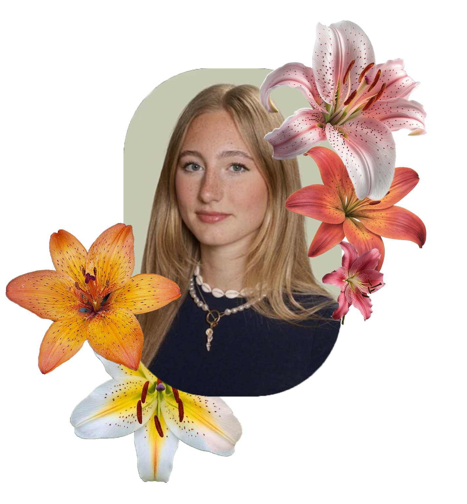
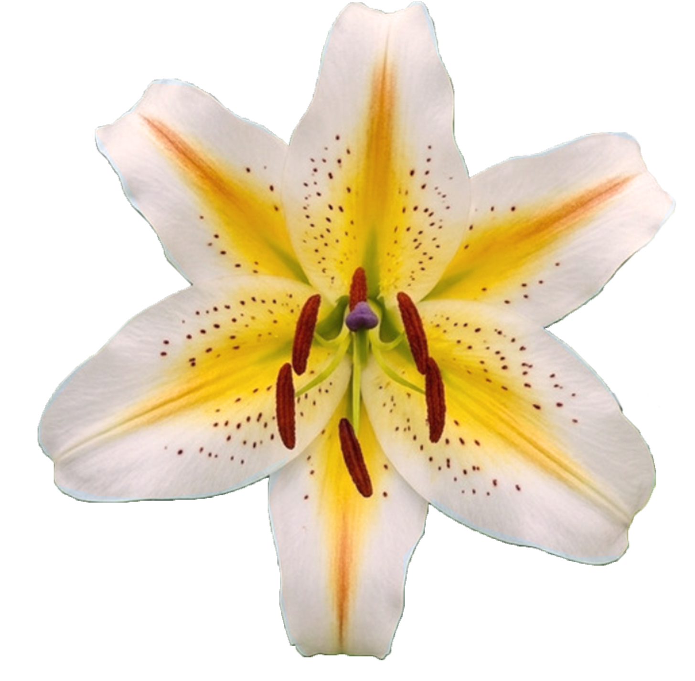

Over mij
Hoi ik ben Julia! Ik ben een student bij de opleiding CMD in Amsterdam. Mijn familie heeft bijna 60 jaar ervaring in de veredeling & ontwikkeling van hybride lelies. Ik wist hier weinig van en heb mij hierin verdiept.

Hoi ik ben Julia! Ik ben een student bij de opleiding CMD in Amsterdam. Mijn familie heeft bijna 60 jaar ervaring in de veredeling & ontwikkeling van hybride lelies. Ik wist hier weinig van en heb mij hierin verdiept.
De lelie is een van de meest diverse bloem die er bestaat. Al deze lelies zijn te verdelen in verschillende typen, zoals: Aziaat, Oriental, Trompet en Longiflorum.
Wanneer is iets een echte lelie? Een echte lelie is onderdeel van het geslacht Lilium. Hij groeit uit een bol die is opgebouwd uit overlappende schubben en produceert één of meer rechtopstaande, bebladerde stengels. De bladeren zitten verspreid langs de stengel. Een lelie heeft zes opvallende bloemblaaderen, verdeeld over twee groepen van drie de kelkbladen en de kroonbladen. Deze lijken zo sterk op elkaar dat ze visueel meestal als één geheel worden gezien.
Sommige lelies geen geur hebben, maar dat hun bloemen tóch speciaal gevormd zijn om nachtvlinders aan te trekken?
